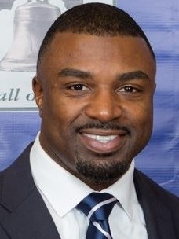

Business & education development
Wesley
Proctor
Enterprise.
Wesley Proctor Enterprise, LLC (WPE) is a business & education development enterprise that specializes in nonprofit and for-profit business formation, coaching, training, and consulting.
Formation · Coaching · Training · Speaking
.JPG)
Mission of the organization
A foundation for
your next chapter.
Wesley Proctor Enterprise, LLC (WPE) is a business & education development enterprise that specializes in non-profit and for-profit business formation, coaching, training, and consulting.
Nonprofit Formation/ Incorporation
Register nowLooking to start a nonprofit organization? (WPE) will walk you through the step-by-step process of forming your nonprofit organization. Just tell us a little about your nonprofit and we can assist you with getting started and legally forming your organization.
02For-profit Business Formation
Register nowLooking to start a for-profit business? (WPE) will walk you through the step-by-step process of forming your for-profit business. Just tell us a little about your business and we can assist you with getting started and legally forming your business.
03Consultation/ Coaching
Register nowAre you or your nonprofit/for-profit business in need of consultation or coaching? Let us help you! (WPE) provides expert one-on-one and group consultation and coaching sessions for businesses/organizations and individuals that will assist you in solving issues, answering questions, and getting the advice you need to move your vision forward.
04Workshops/ Trainings
Register nowAre you, your organization, business, or team in need of workshops and training to take your business to the next level? (WPE) offers an array of workshops and custom training sessions designed to help your organization/business stay on the right track for success.
About us
People. Purpose.
Possibility.
Wesley Proctor Enterprise, LLC (WPE) is a business & education development enterprise that specializes in nonprofit and for-profit business formation, coaching, training, and consulting.
Get to know Dr. ProctorClient testimonial
We can’t thank Dr. Wesley Proctor enough for helping to build, develop and structure our nonprofit. Dr. Proctor has made certain that all of our paperwork is filed on time and correctly. Without his leadership and foresight our nonprofit would be in serious trouble. Thank you Dr. Proctor for all of your help throughout the years.

CEO of Brian Westbrook Foundation, Inc.
View our original client testimonials


Let’s put your purpose
into motion.
Your idea. Your organization. A clear next step.